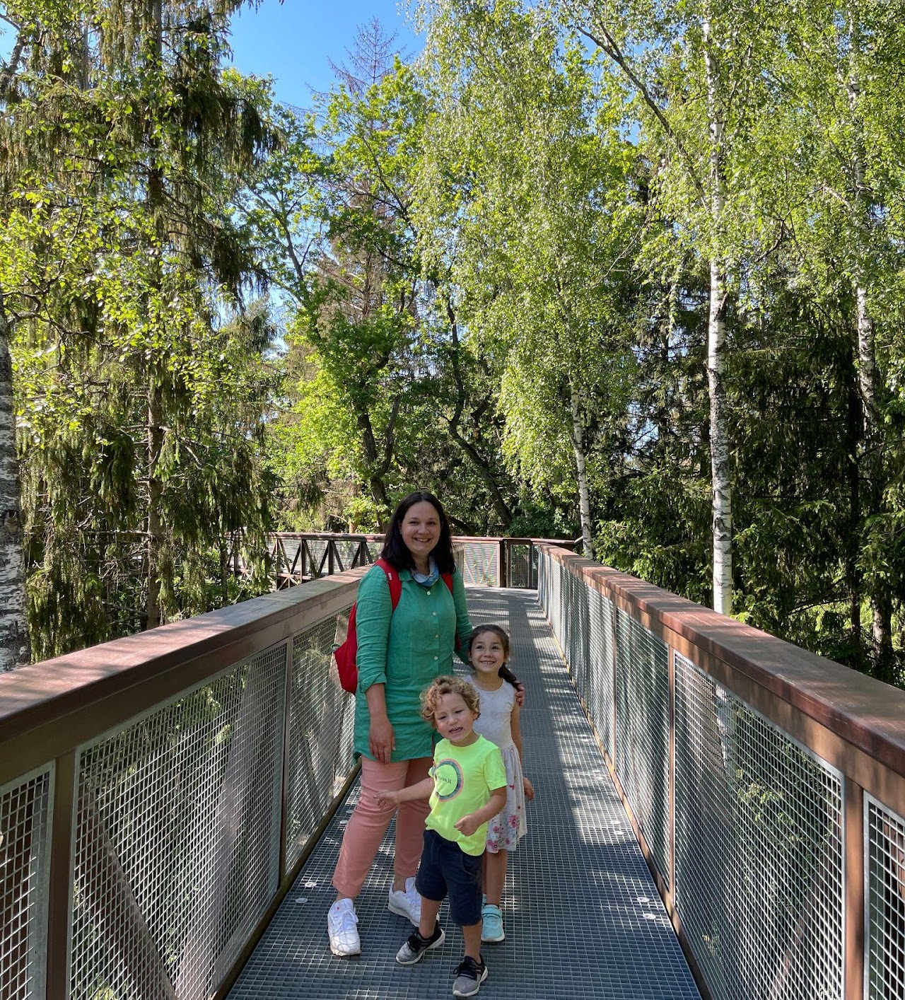
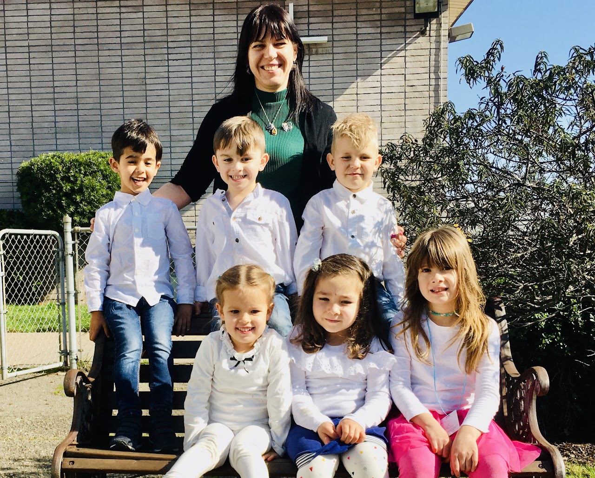
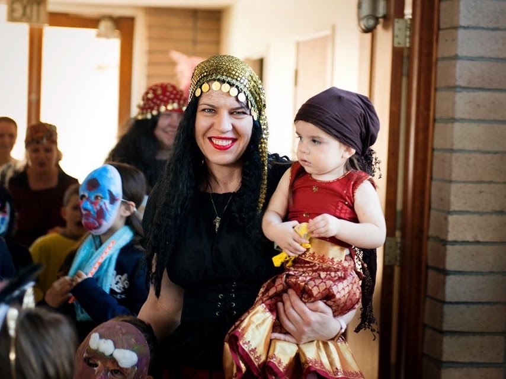
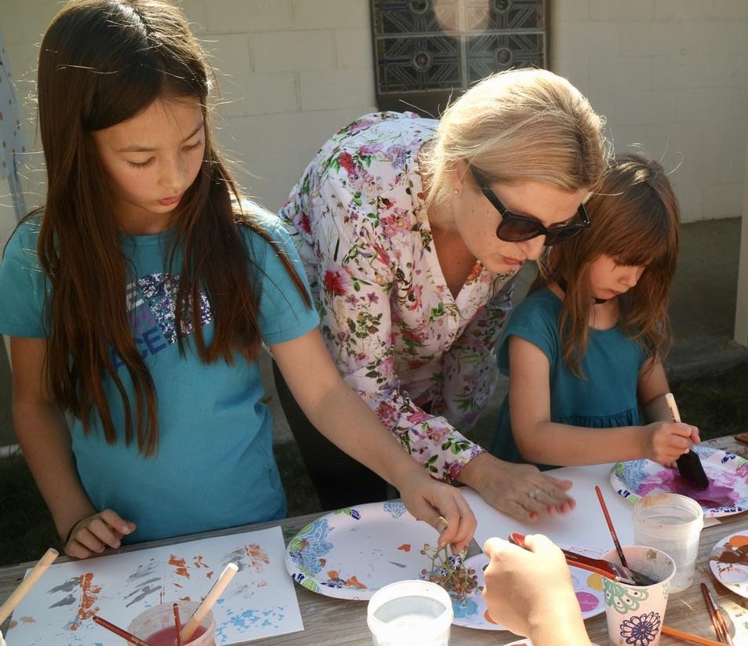
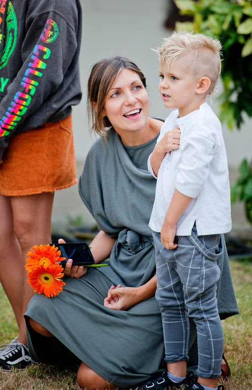
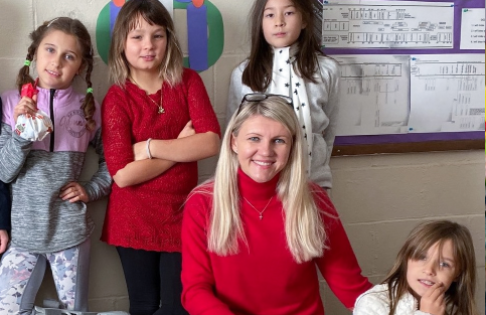
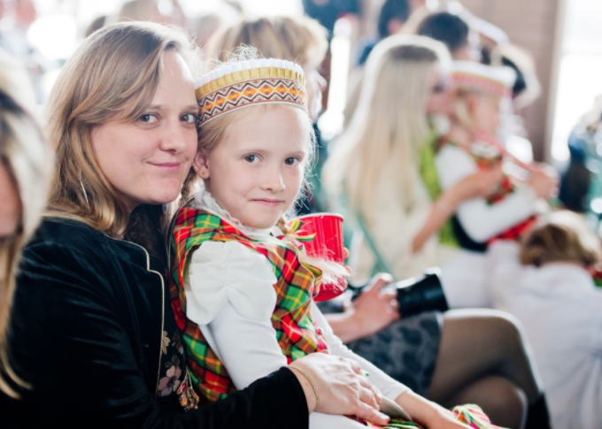
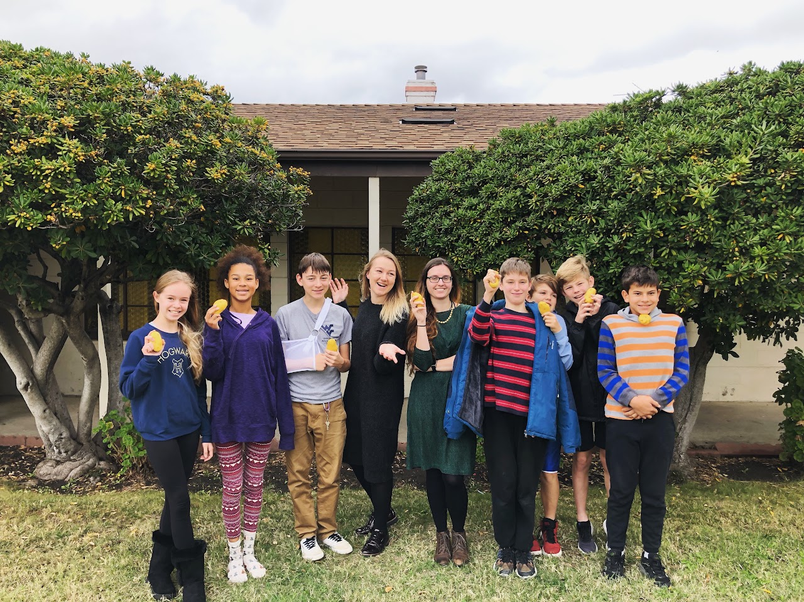
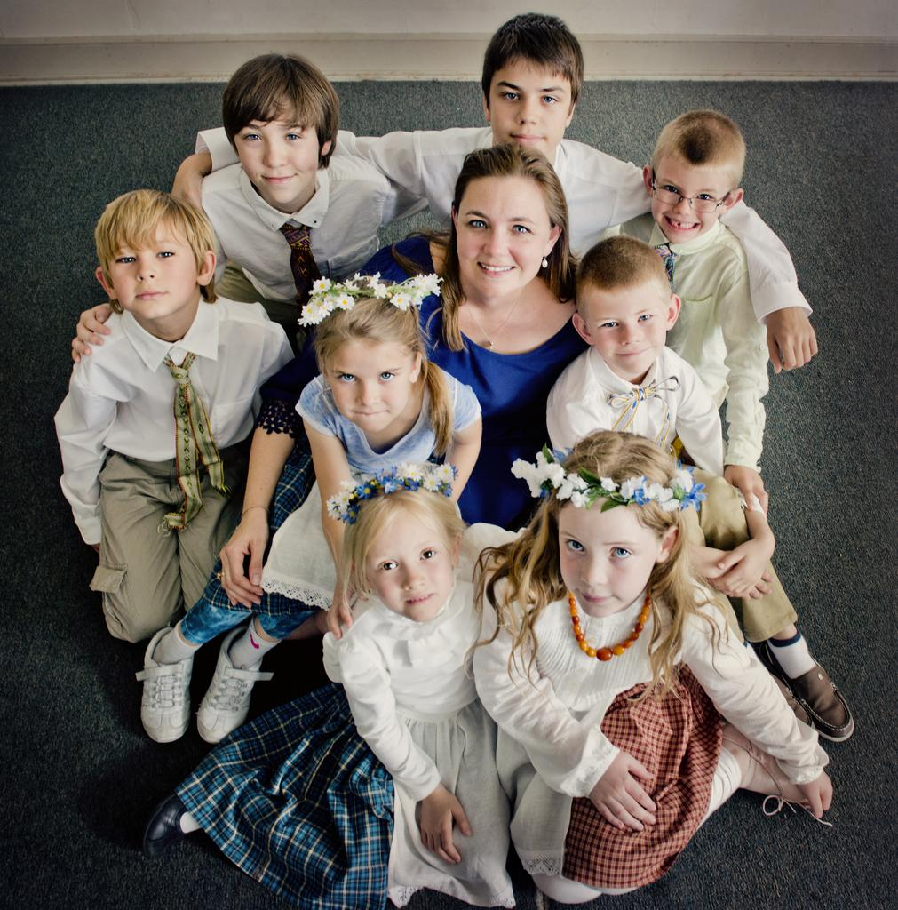
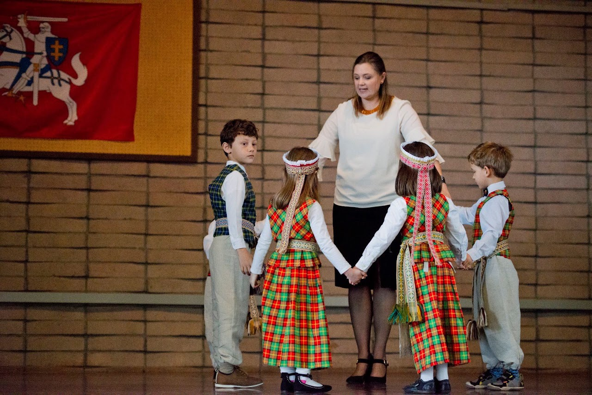

MŪSŲ ŽMONĖS
Mūsų mokytojų komanda

Mūsų mokytojai ir savanoriai kuria jaukią erdvę kalbai, kūrybai, žaidimui ir kiekvieno vaiko pasitikėjimui. Spauskite mokytojo kortelę ir susipažinkite artimiau.
Mokytojų ir mokinių akimirkos









